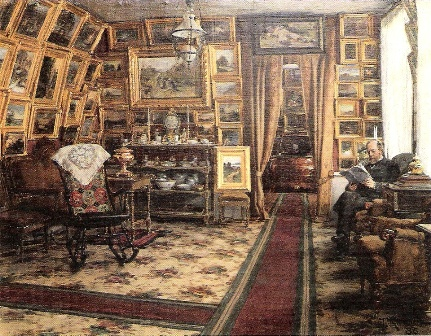
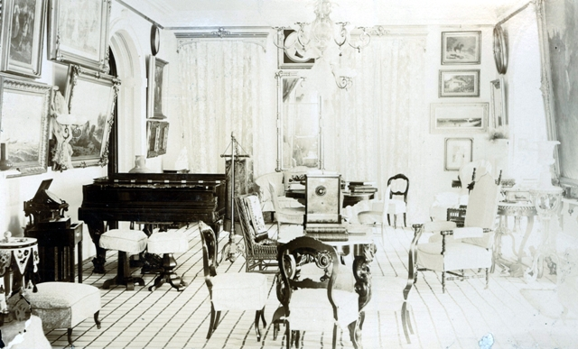
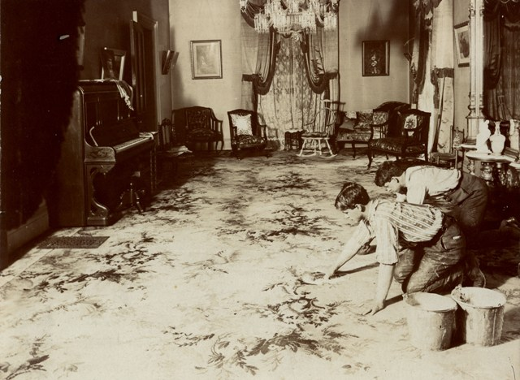
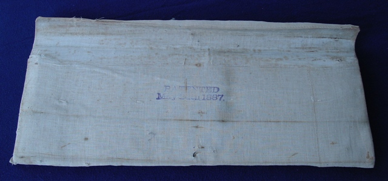
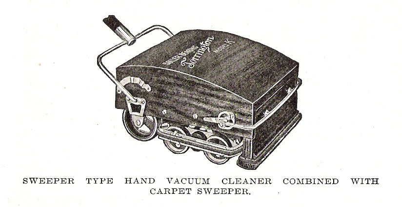
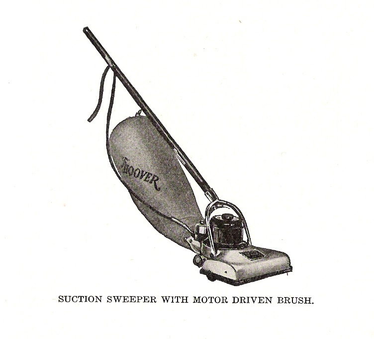
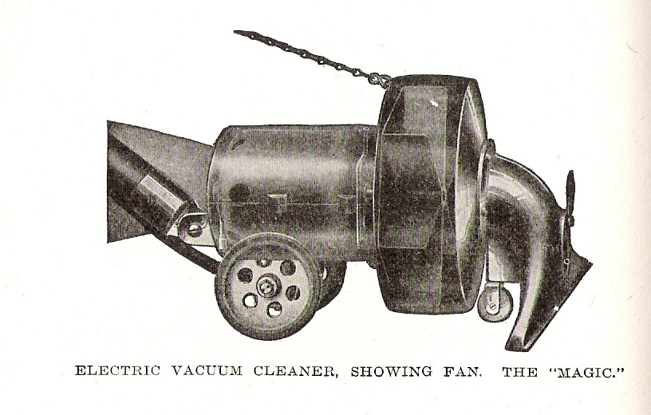
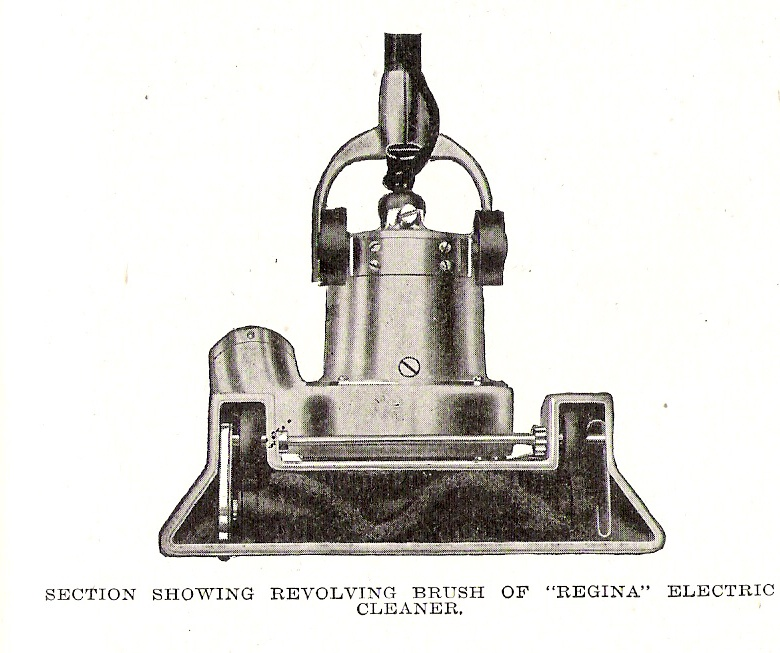
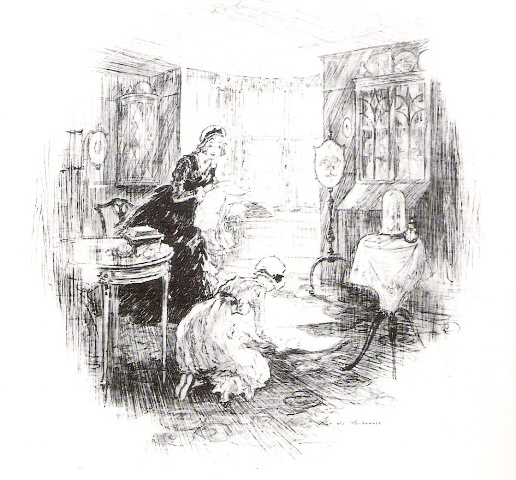

Edited by John Burrows, J.R. Burrows & Company,
Edited by John Burrows, J.R. Burrows & Company,
Historical-Design Merchants, Rockland, Massachusetts www.burrows.com
HISTORIC CARPET CLEANING METHODS IN THE NINETEENTH AND TWENTIETH CENTURIES.
 Edited by John Burrows, J.R. Burrows & Company,
Edited by John Burrows, J.R. Burrows & Company,
Historical-Design Merchants, Rockland, Massachusetts www.burrows.com
NOTE: the articles in Section One are of historic interest, but are not offered as a suggestion for contemporary use.
FOR CURRENT CLEANING INSTRUCTIONS see contemporary cleaning methods from Wools of New Zealand, in Section Three below.
SECTION ONE: HISTORIC CARPET CLEANING METHODS
Editor’s Note: One of the most common strategies of keeping carpets clean in the early nineteenth century was to use druggets, heavy woolen goods spread under tables to protect carpet from spills. They are sometimes called crumb cloths. In addition to dining rooms they were used in other areas of heavy wear. E.V. Rippingille painted The Young Trio in 1829 showing a drugget protecting carpet in a parlor where children are at play. See note below about more complete coverings of carpets for summer dress.

Caption: The Young Trio, by E.V. Rippingille, 1829
Bristol City Museum & Art Gallery.

Frederick Daniel Hardy, Playing at Doctors, c.1863
In this English painting the grandmother's. Georgian home is shown with a worn ingrain or Brussels carpet. The children are at play while the grandmother has been away, and the floor on which they play is not protected by a druggert, but there is a rug under the table at the side, either to protect the carpet or to cover a worn area near the window.

Scandinavian Room with drugget runners
“Bibliotekarien Segersteen i sitt hem,” 1886, by Johan Fredrik Krouthen

Seward House Drawing Room in Summer Dress, August 23, 1886
Auburn, New York, Seward House collection.
Covering Carpets in Summer and for Receptions.
Photographic documentation shows wall-to-wall carpet covered during the summer months, and also for special receptions. This image of the Seward House Drawing Room shows a checked design cloth covering the complete room, slip covers on the chairs, and the heavy draperies removed for the summer. This room retains the original 19th century carpet that is being protected by the summer covering in this view.
Photographs in the collection of the Minnesota Historical Society show a pair of parlors in the 1890s with wall-to-wall carpet completely covered with white canvas, stretched and tacked down, for a wedding reception. This extreme effort to protect carpets from sunlight and dirt indicate the high value placed on carpets at that time.
1827
To Restore Carpets to their First Bloom.
Beat your carpets with your carpet rods until perfectly clean from dust, then if there be any ink spots take it out with a lemon, and if oil spots, take out as in the foregoing receipt, observing to rinse with clean water; then take a hot loaf of white bread, split down the centre, having the top and bottom crust one on each half, with this rub your carpet extremely well over, then hang it out on or across a line with the right side out; should the night be fine, leave it out all night, and if the weather be clear, leave it out for two or three such nights, then sweep it with a clean corn broom, and it will look as when first new.
Of the Tree Coals and Their Advantages over Liverpool.
... Burn Liverpool, and your clothes are smutted – your flesh begrimed – your furniture dirtied – your walls blackened, and wherever there happens to be a crack, seamed with long tapering streaks of soot – your carpets soiled, and when taken up, if there are cracks in your floor, are found indelibly stained with corresponding lines of smut, to such a degree that you are defeated in your economical purpose of wearing them next year the wrong side up. [Note: Ingrain carpets were reversible.]
The House Servant’s Directory by Robert Roberts, Butler to The Hon. Christopher Gore, Governor of Massachusetts, 1809. Waltham, Mass: The Gore Place Society (reproduction), facsimile of 1827 edition published 1977.
Recollections of a Housekeeper
By Mrs. Clarissa Packard.”
New-York: Harper & Brothers, 1834
Editor’s note: In a chapter entitled “A Struggle for Power.” Mrs. Packard describes her feelings about the presence of her husband’s office dog in the home. The types of carpet and rugs in her house is mentioned. Velvet cut pile Wilton carpet was one of the most expensive weaves in the 1830s and were highly prized. Hearth rugs were used to protect wall-to-wall carpet from damage from sparks and dirt from the fireplace, and from wear of visitors standing near the fire for warmth (and pets lying in front of the fire). The painted floor was likely in the hallway.
At length, Growler finding the house so comfortable, came home at night with his master, and daringly laid his unwieldy form on the center of the hearth-rug, while Fairy [Mrs. Packard’s favored cat], routed from her luxurious station, stood upon her dignity, hissing and sputtering in one corner.
For a long period a single look from me would make Edward banish Growler from the room; but a present of a new office-dog from a friend completely established him at home, and my husband became accustomed to my look and Growler’s presence. When he grew indifferent, my ire was roused. I affirmed, that of all created things dogs were the dirtiest, - that the house was filled with fleas, - that my visitors never could approach the fire, - that Growler ate us out of house and home, - and if he was to be indulged in tracking the Wilton carpet and painted floors, we had better live in a wigwam.
Edward sometimes gently excused his dog, sometimes defending him, and always turned him out of doors. The animal, knowing he had an enemy in the cabinet, would sneak in with a coward look, his tail between his legs, but invariably succeeded in ensconcing himself on Fairy’s rightful domain.
Recollections of a Housekeeper
By Mrs. Clarissa Packard.
New-York: Harper & Brothers, 1834
Editor’s note: This passage describes a young woman marrying and taking possession of her new home. ‘Making up a carpet’ referred to sewing the strips together for installation.
[He] introduced himself to my mother as Mr. Packard… and though my mother was one of the most unostentatious women in the world, yet before he left us she made him understand that I could skewer a goose, roll puff paste, complete a shirt, and make a list carpet, as well as I played on the spinet and worked tent-stitch. She was on the point of telling him that I could spin a little, but I protested against any thing so old-fashioned.
According to my motto, I “gave over pribbles and prabbles,” and married, at the age of seventeen, Edward Packard. I remember the moment, when, after a short ride, I first entered my adopted home in the North Square, one of the most genteel quarters in the then town of Boston. The new carpet, new chairs, and new mahogany, with its virgin hue, undarkened by wax and turpentine, are all before me. My mother was with me, and though she held one of my hands, and my husband the other, I could not restrain my tears from falling, happy though they were.
I felt half ashamed to praise the parlour furniture, though I secretly said, “It is mine.” On recovering from my shyness, I visited the various apartments, and I think I was most attracted by the nicely sanded kitchen, not even excepting a closet, which I might now call a boudoir, fitted up expressly for me by my husband. How bright were those new tins and brasses, arranged with ostentatious glitter on the walls and dresser! How comfortable that suspended warming pan! How red and clean those bricks, that extended to the right and left, leaving space for a family in the corners. A settle, too, that glory of New-England kitchens, was there, now banished for the inhospitable chair, which accommodates one instead of three! I had often presided in a parlour, but never before was mistress of a kitchen!
Recollections of a Housekeeper
By Mrs. Clarissa Packard.
New-York: Harper & Brothers, 1834
Editor’s note: This passage describes a young woman marrying and taking possession of her new home. ‘Making up a carpet’ referred to sewing the strips together for installation.
[He] introduced himself to my mother as Mr. Packard… and though my mother was one of the most unostentatious women in the world, yet before he left us she made him understand that I could skewer a goose, roll puff paste, complete a shirt, and make a list carpet, as well as I played on the spinet and worked tent-stitch. She was on the point of telling him that I could spin a little, but I protested against any thing so old-fashioned.
According to my motto, I “gave over pribbles and prabbles,” and married, at the age of seventeen, Edward Packard. I remember the moment, when, after a short ride, I first entered my adopted home in the North Square, one of the most genteel quarters in the then town of Boston. The new carpet, new chairs, and new mahogany, with its virgin hue, undarkened by wax and turpentine, are all before me. My mother was with me, and though she held one of my hands, and my husband the other, I could not restrain my tears from falling, happy though they were.
I felt half ashamed to praise the parlour furniture, though I secretly said, “It is mine.” On recovering from my shyness, I visited the various apartments, and I think I was most attracted by the nicely sanded kitchen, not even excepting a closet, which I might now call a boudoir, fitted up expressly for me by my husband. How bright were those new tins and brasses, arranged with ostentatious glitter on the walls and dresser! How comfortable that suspended warming pan! How red and clean those bricks, that extended to the right and left, leaving space for a family in the corners. A settle, too, that glory of New-England kitchens, was there, now banished for the inhospitable chair, which accommodates one instead of three! I had often presided in a parlour, but never before was mistress of a kitchen!
Recollections of a Housekeeper
By Mrs. Clarissa Packard.”
New-York: Harper & Brothers, 1834
Editor’s Note: Mrs. Packard relates familiar stories of mishaps that would have ruined a carpet. Her stories focus on slippers and dresses ruined by spills, which suggests the carpets were protected by a druggert, as was common under tables.
From Chapter VII. Grease.
I hope I may be excused here for a homely piece of advice, which is, that wives should not only keep the lamps of their souls trimmed and burning, but attend to that department in their household economy. If they do not, their husbands may as well sit down to sup with the ladies of Queen Charlotte’s Sound, whom Captain Cook describes as not only “drinking the oil from his lamps, but eating the cotton wick.”
In return for the various attentions we had received, Edward and myself sent out invitations for an evening party. We had not the facilities for lighting our rooms which make it so little trouble now, by sending for a professor in the art, to produce a blaze that shall cast no shadow; but we treated ourselves to an astral lamp, they having been newly brought to this country. Being somewhat ambitious of intellectual display, and the time beginning to pass away when ladies did not feel themselves pinned to the same seat for three hours, we managed, by buying and borrowing, to collect some amusing novelties; among them was a magnifying glass, with splendid Italian views. These were arranged on the sofa table, illuminated by our new lamp, which attracted universal admiration. The Italian views became the chief subject of attention, but alas! As our guests crowded around the table it was suddenly overthrown, and the lamp shattered to pieces. Satin slippers and gentlemen’s pumps received the indiscriminate shower of oil, and the beautiful engravings coming in for a share, a young beau, who never lost a pun, even in calamity, whispered to me that they were “oil paintings.”
A general shock was given to our before complacent group; first were circulated whispered complaints and commiseration, then in a louder tone followed details of similar misfortunes, and recipes for extracting them.
I contrived to affect great indifference, and Edward got up his best jokes, but after a struggle at general sociability the company retired, and left us, at an earlier period than we expected, gazing on the wreck.
It is easy to preserve a sweet smile in the presence of fifty people, but the test of good nature follows in a tête-à-tête.
“What an awkward wretch that Mason is,” said Edward. “I wish people would not go into society until they are civilized!”
“I am surprised at your blaming Mr. Mason,” said I. “It was Miss Otis who knocked over the table – that girl thinks she must be the first in everything.”
“Mrs. Packard, I am confident that it was Mr. Mason,” returned Edward.
“Mr. Packard,” replied I, “I saw Miss Otis do it with my own eyes.”
“Women are always obstinate,” said he, turning away.
“And men are always domineering,” I answered, in the same tone.
There ended our first party, and began our first quarrel; but it seemed so odd, that turning round, our eyes met, and we burst out into unaffected laughter.
I will not enter into a detail of similar misfortunes. Who has not, after long deliberation, purchased a set of expensive lamps, only to suffocate himself or his friends with smoke! – Who has not heard his glass shades pop one after another, with a report as harassing as the small arms of an enemy? Who has not welcomed “the tall mould candle straight and round,” while the costly lamp, that gave for five minutes a gleam of light, is “Wisely kept for show.”
But I have other themes of varied trouble to relate. One commencement day a large party assembled to dine with us, after the college exercises. Edward had presented me with a new silk dress. It was a rare and important addition to my wardrobe, and I made my toilet with many resolutions to be careful of it. As I sat at the table, with the consciousness of a well-ordered dinner and an appropriate dress, whose value to me was double enhanced by its being Edward’s choice, one of the waiters, with a zeal worthy of a better cause, jostled by another, who was reaching above my shoulder to deposite a gravy-boat, and knocked it over. I felt the warm stream trickle through my lace tippet, and saw it pour into my lap. Selon la regle, I was obliged either not to notice or make a jest of it. I had the resolution not to look at the servant (how often have I seen looks speak more than words!) and turning quietly to my left-hand neighbour, I said “Pray, sir, excuse my being helped first.” I
1863
Sweeping Carpets.
Persons who are accustomed to use tea leaves for sweeping their carpets, and find that they leave stains, will do well to employ fresh cut grass instead. It is better than tea leaves for preventing dust, and gives the carpets a very bright fresh look.
Enquire Within upon Everything, London: Houlston and Wright, 1863.
1869
The Care of Rooms.
Unless a parlor is in constant use, it is best to sweep it only once a week, and at other times use a whisk-broom and dust-pan. When a parlor with handsome furniture is to be swept, cover the sofas, centre table, piano, books, and mantelpiece with old cottons kept for the purpose. Remove the rugs and shake them, and clean the jambs, hearth, and fire-furniture. Then sweep the room, moving every article. [Note: rugs are small hearth-rugs, typical to Victorian rooms.]
The American Woman’s Home, Catherine Beecher and Harriet Beecher Stowe, New York: J.B. Ford & Co., 1869
1879
Cleaning Carpets.
The oftener carpets are shaken, the longer they wear; the dirt that collects under them, grinds out the threads.
Do not have carpets swept any oftener than is absolutely necessary. After dinner, sweep the crumbs into a dusting-pan with your hearth-brush; and if you have been sewing, pick up the threads by hand. A carpet can be kept very neat in this way; and a broom wears it very much.
The American Frugal Housewife. Dedicated to Those Who Are Not Ashamed of Economy, Mrs. Child., twelfth edition, 1833. Boston/Cambridge: A George Dawson Book; Applewood Books, in cooperation with Old Sturbridge Village,
To Wash Carpets.
Shake, beat, and sweep well. Tack firmly on the floor. Mix three quarts soft, cold water with one quart beef’s gall. Wash with a flannel, rub off with a clean flannel, immediately after putting it on each strip of carpet, - Mrs. R.
Carpets should be washed in spots, with a brush or flannel, one tablespoonful ox-gall in one or two quarts water. – Mrs. A.
To Remove Ink from Carpets.
Take up the ink with a spoon. Pour cold water on the stained spot, take up the water with a spoon, and repeat this process frequently. Then rub on a little oxalic acid and wash off immediately with cold water. Then wet with hartshorn. – Mrs. R.
Housekeeping in Old Virginia, edited by Marion Cabell Tyree. Louisville, Ky.: John P. Morton and Company, 1879.

Isham-Terry House, Antiquarian & Landmarks Society
Hartford, Connecticut, date unknown.
1884
CARPET NOTES.
Sweeping Carpets. – Oriental carpets should be swept with a broom of stiff fibre; always, of course, in common with all pile carpets, in the direction of the pile. No alarm need be felt, however, if a little of the loose wool comes away with sweeping. Should it continue, prompt notice should be given, as a firm having regard for their business reputation would desire to set the matter right; and herein lies the advantage in purchasing carpets from those who have a reputation, and an interest in maintaining it.
In the matter of selection between the many different carpet-sweepers, the choice of the best is largely one of individual preference of the customer.
Cleansing Carpets (Naphta Process). – This is regarded as the surest and most satisfactory, where there is the slightest suspicion of moth eggs or worms. It is especially adapted to pile carpets. Caution should be exercised as to the purity and clearness of the naphtha used, and the thorough extraction of the grease, else the dirt adheres more easily than before. Where carpets are to remain on storage some time, the odor can be left in the carpet if desired. A more through cleansing can be assured by having the carpet beaten first. A surface application of naphtha will drive the impurities through the article, to be absorbed by that which is under it.
Beating. – There was a time when all work of this kind, done by hand, was preferred; but in the absence of men who do it thoroughly, and the lack of available space for such operations, the improved carpet-beating machines are heartily recommended. They do their work thoroughly, evenly; and in one place, at least, it can be said, that no danger exists from any thing getting into the carpet from previous cleanings, as all dirt is carried off immediately. Where work of this kind is done at home, care should be exercised that the article is beaten on its back, in order that the dirt may be forced from the place where it has settled. The best instrument in use is a rattan with a large loop.

Carpet Beater, collection of Craigdarroch Castle, Victoria, BC, Canada
Washing. – The dye-houses have done some very satisfactory work on woolen carpets, but the process shrinks the carpet very much.
Cleansing on Floor. – Where oil is required to be removed, without taking up the carpet, pipe-clay thoroughly beaten into the carpet will absorb it within forty-eight hours, when it can be brushed off. This is just the opposite, in its action, from naphtha. Water split upon carpets should be sopped up, not rubbed.
Carpet Notes, John Pray, Sons & Co., Boston 1884 [Note: this publication was by a leading carpet retailer in Boston, Massachusetts.]

Carpet Sweeper, collection of Craigdarroch Castle, Victoria, BC, Canada
1885
Lining Stair Carpets.
It is common practice to use bits of old carpet as a lining for stair carpets, but a much better way is to take strips of an old bed-quilt, have them not quite the width of the staircase, wash and dry first, then put smoothly over the stairs, tacking in a few places. It is softer than old carpet, and will not wear the outer one nearly so much. Of course this is a hint for those who cannot afford the nice linings that are made on purpose.
The Successful Housekeeper, A Manual of Universal Application, Especially Adapted to the Every Day Wants of American Housewives. Detroit, Mich. M.W. Ellsworth & Company, 1885.

Novelty No. 1 stair carpet pad, Patented May 24th, 1887
Fiberboard with cotton batting covered with muslin.
Collection of J.R. Burrows & Company
1886
Spring House-Cleaning.
After a Carpet has been well beaten and the floor perfectly dry, it can be nailed down tightly, and then the soiled portions can be cleaned with two quarts of cold water with a bullock’s gall dissolved in it. Put on with a soft brush and wipe dry with a clean cloth. Potter’s clay mixed as a past (thick) with water and spread on with a knife, wet, will clean them nicely. Cover over with several thicknesses of heavy brown paper, leaving it for a day or two; then brush off. If not entirely removed, apply again. It never fails when properly used. If spots of grease are upon them, saturate the spot with spirits of turpentine and let it remain several hours; then rub it between the hands. It will crumble away without injuring the color or texture. When a color has been destroyed by acid (unless some shade of red), ammonia will neutralize the acid, and chloroform will restore the original color. A solution of oxalic acid crystals, one part by measure to eight of soft water, will entirely remove dry ink stains. The goods must be afterwards thoroughly washed, as the acid destroys the cloth. If a carpet is thick, like those of Brussels or Axminster, and is much soiled, take a clean mop and dip it into warmish water, to which one teaspoonful of ammonia has been added to each quart. Wring out the mop as dry as possible, and rub it over the carpet in breadths. When the water becomes soiled, take a fresh supply.
…Benzine will eradicate moths in the carpets the same as in furniture. Avoid using it near the fire, or in a room where a light is burning. Alum is also certain death to all insects. Dissolve it in proportion of one tablespoonful to a quart of water….
The Household, A Cyclopaedia of Practical Hints for Modern Homes, edited by May Perrin Goff. Detroit, Mich.: The Detroit Free Press Publishing Company, 1886.
1920
New Versus Old Idea in Cleaning
If one general term could be applied to the manner of all cleaning up to the present, that term could well be “scattering”; for in all the various steps of sweeping and dusting, the work was done in such a way as to scatter and spread the dust particles (and bacteria) from one place to another. The corn broom swept the dust out of the carpet, only to raise it in the air so that it lodged on pictures, moldings, etc. Again, the feather duster removed the dust from these same pictures only to have it fall on the floor, and thus went on a continuous cycle of dust which was never entirely eliminated from the house after all.
The new sanitary ideal today has for its watchword “absorption.” The broom is being largely replaced by the suction method of the modern vacuum cleaner, and the dustless duster holds dusts as it cleans. No one invention is so responsible for new cleaning methods as is the so-called vacuum cleaner. The principle on which these are built is that of suction, or the intake of air. This suction is developed in various ways, and takes with it the dust as well as air from whatever surface the cleaner is operated on. There are four broad types of cleaners as follows:
(1) Large portable vacuum cleaners, dustbag within the cleaner; hand or electric.
(2) Small vacuum cleaners, dustbag outside the cleaner; electric.
(3) Carpet sweeper, box model vacuum cleaner (hand type).
(4) Stationary machines, located in basement, with pipes to all floors.

There is a slight distinction between vacuum cleaner and suction cleaner. In the vacuum cleaner, a diaphragm or rotary pump is used to create a partial vacuum in each stroke. The surrounding atmosphere then rushes in to fill this vacuum, bringing in dust. At the end of each stroke, when operated slowly, the vacuum model loses “pull” for an instant, but this is not noticeable at full speed. This type of cleaner can make a very strong pull.
In the suction type of cleaner using power, the suction is created by means of fans or turbines operated by a small motor encased in some portion of the cleaner. These fans in revolving cause an intake of air, bringing with the air dust, small fragments of paper, matches, etc. In this type of cleaner, the “pull” is not very strong, but a large volume of air can be moved, permitting the use of a wide opening. In the suction type of cleaner operated by hand, the suction is created generally by a pair of bellows which, in being shut, caused a similar but less violent suction of air and intake of dust. In the hand type, however, the effort of the operator is needed to make the necessary power. In the suction type also there is a continuous flow of air, while in the vacuum type there is a distinct “pull” for an instant, as mentioned above, at the end of each stroke.
The large portable vacuum cleaner (electric) is made with a powerful motor and is particularly suited to cleaning large houses or where there are many thick, all over rugs, carpets, and a quantity of draperies. This type of cleaner is always used with a hose attachment inserted in the intake opening. At the other end of the hose is what is called the nozzle opening, which is the actual part of the cleaner moved over any given surface. This nozzle tool may be a tool for the floor, for mattresses and tufted furniture, for draperies, etc., etc. the price of such a large portable cleaner is about $75.00 because of the cost of a powerful motor.
The large portable vacuum cleaner (hand) is operated by an air pump and lever, and preferably is worked by two persons, one to pump and one to move the hose attachment wherever necessary. In both of these portable type machines, the dustbag is within the body of the cleaner. This hand portable when operated by two people does almost as good work as any electric machine, but the labor is considerable. It comes fitted with all similar attachments, and costs from $20.00 to $30.00.

The small portable cleaner (electric) is made in many models and seems the best type suited for average use in homes wired for electricity. With this type, the dustbag is on the outside, the machine is light in weight, and can be operated on carpets and floor without a hoe attachment. The hose is necessary here only to clean draperies, mattresses, etc., and anything off the floor level. The advantages of such a machine are that it can easily be taken up and downstairs by a woman, that it rolls easily, that it takes little storage space when not in use. The price of such a cleaner is from $30.00 to $45.00.
The sweeper type of cleaner is operated by hand. It consists of a box built like a carpet sweeper in which is contained a bellows. These bellows are operated whenever the cleaner is moved backward or forward over the carpet, the suction created drawing the dust from the carpet. No attachments can be used with this type, which is strictly for floor use and is suitable only for carpets and large rugs.

It does not clean bare floors well. This type is somewhat heavy and fatiguing to work in comparison to the usual carpet sweeper. In some models of this box type a sweeper just like a carpet sweeper is combined so that the carpet is swept at the same time that dust is sucked out of it. They cost from $5.00 to $12.00.
While the powerful electric machine and even the small, light machines suck dust from a given surface and pick up lint, matches, etc., most of them do not pick up threads, crumbs, or, in other words, brush the carpet at the same time that they clean it pneumatically. In order to provide for this picking up of threads, many cleaners, both large and small, are fitted with brush attachments either within the body of the cleaner or mounted without on a small platform. It is well to note this point in a cleaner before purchasing.

Suggestions on Buying Vacuum Cleaners
The first thing to decide before purchasing is the conditions in the home in which the cleaner is to be used. If there are large areas of all-over carpet, many draperies, etc., a powerful portable type will be needed. If small rugs, matting, and bare floors, the light-weight electric cleaner can be used. If it is more important to have the draperies, tufted furniture, etc., cleaned by this method, select a machine that has a direct inlet to the fan-chamber instead of an attachment that clamps to the floor suction nozzle...
1934
Shampooing a Rug
A rug can be shampooed in the house, although conditions are better when done outdoors. There are needed an ample supply of soap jelly, a large bowl, an egg beater, a soft scrub brush, 2 pails of clean water, and a number of clean cloths.
The rug should be thoroughly cleaned on both sides, preferably with a vacuum cleaner; if the work is to be done in the house, the floor beneath should also be cleaned. The rug can be shampooed lying on the floor, but there is greater convenience in having a small table over which it can be drawn section by section.
A quantity of soap jelly is placed in the bowl and beaten to a stiff lather resembling whipped cream. This is applied with the brush to a section of the rug not over 2 feet square and rubbed in with a circular motion; more lather is added as required. When the section is clean, the lather is wiped off with a damp cloth, the space again gone over with another clean cloth wrung out in clean water in the second pail and wiped with a dry cloth. An adjoining section of the rug is then shampooed, with care to work over the edge of the first to prevent the leaving of an unwashed streak.
When cleaned, the rug should be hung outdoors in the shade to dry. Should this not be possible, it should be supported on chair backs, and all windows opened to admit plenty of air. When dry, the nap should be brushed in one direction with a stiff broom.
[Note: no cleaning method is given for carpet, which had fallen from style in the 1920s-30s.]
First Aid for The Ailing House, Roger B. Whitman, New York: Whittlesey House, McGraw-Hill Book Company, Inc., 1934.
1949
Cleanliness and Safety In Your Home: The Floors
If floors are covered with carpet, they may be cleaned each day by using a broom or preferably a carpet sweeper. If you must use a broom, try not to throw the dust into the air. Do not lift up the broom at the end of a stroke. Keep it close to the floor.
If a broom is used daily or for the thorough weekly cleaning, it is well before sweeping to sprinkle over the floor damp (not wet) tea leaves or bits of paper dampened with water. A whisk broom (used for floors only) may be needed to remove dust from corners or from underneath radiators.
If a home is equipped with a vacuum cleaner, it should be used on carpets or rugs at least once a week. Empty the dust bag of a vacuum cleaner frequently. To do this, spread a dampened newspaper on the floor, unfasten the bag, holding it over the paper. Then turn the bag inside out to remove the dust. Brush it with a dampened whisk broom. Fold the paper to enclose the dust, and burn it.
If a rug is used for floor covering, the uncovered wood border needs cleaning. First sweep it, using, if possible, a long-handled floor brush. If the wood is finished with varnish, shellac, or wax, clean and polish it like woodwork having similar finishes. Weighted brushes are efficient for polishing waxed floors. To keep the latter in good condition, it is usually necessary to use such a brush about once a month and to apply wax every two or three months.
Your Home And You, Unit Course in Home Economics, Charlotta C. Greer, Boston and New York: Allyn and Bacon, 1949.
SECTION TWO: CARPET CLEANING IN LITERATURE

Illustration from Cranford, by A.K. MacDonald, 1851
Cranford, by Mrs. Gaskell, 1851
The Miss Jenkynes had purchased a new carpet for the drawing-room. Oh, the busy work Miss Matty and I had in chasing the sunbeams, as they fell in an afternoon right down the carpet through the blindless window! We spread newspapers over the places, and sat down to our book or our work; and lo! In a quarter of an hour the sun had moved, and was blazing away on a fresh spot; and down again we went on our knees to alter the position of the newspapers. We were very busy, too, one whole morning, before Miss Jenkyns gave her party in following her directions, and in cutting out and stitching together pieces of newspaper so as to form little paths to every chair set for the expected visitors, lest their shoes might dirty or defile the purity of the carpet. Do you make paper paths for every guest to walk upon in London?
The Red-Bridge Neighborhood, by Maria Louise Pool, New York and London: Harper & Brothers Publishers, 1899. [Note: Maria Louise Pool was an author from Rockland, Massachusetts, home to J.R. Burrows & Co.]
Mrs. Newcomb took up the teapot and poured more tea into her cup. It was very black stuff that came from the nozzle. Her method of preparing her almost hourly drink was to put in fresh tea leaves on the already soaked ones in the pot, turning in more water until at last the pot was crowded with the solid mass. Then she emptied these leaves into a large stone crock which stood on the floor under the shelves in the buttery, and began again. This stock of steeped leaves was sacred to the faded three-ply carpet on the sitting-room. Whenever that carpet was swept, Mrs. Newcomb liberally sprinkled it with the wet leaves, which were brushed up as the sweeping went on. She had read, as she said, “in print,” of this method of cleaning a carpet. What she saw in print was of great weight with her.
Grandmother Brown’s Hundred Years, chapter: An Iowa Village, by Harriet Connor Brown, Boston: Little, Brown, and Company, 1929
“While I sewed, Herbie was always at my side. He was the best-natured child I ever saw. As he grew older he always wanted to be working. I’d say, “Go pick up some chips.’ ‘What I do next, Mamma?’ ‘You may cut out some papers for cleaning the carpet.’ (We used to moisten scraps of paper to scatter over the carpet when we swept. They helped to pick up the dust.) ‘What next?’ he’d ask. ‘Cut them smaller.’ And so he kept me busy, thinking up jobs he could do.”
SECTION THREE: CONTEMPORARY CARPET CLEANING METHODS
Wool Carpet Care InformationInformation on maintaining wool carpets from Wools of New Zealand (the wool trade organization)
emphasizes the following:
1. Vacuum regularly.
2. Remove spills immediately.
3. Professionally clean as required (usually not more than once every one to two years)
Vacuuming
The most important maintenance step is proper vacuuming. Regular and thorough vacuuming at least once a week and more often in heavy traffic areas will remove soil and dirt particles before they become embedded into the pile of the carpet. Remember you cannot over-vacuum, and vacuuming should begin the day the carpet is installed.
Spot and Spill Removal
One of the most crucial areas of carpet maintenance is removal of spots and spills. Acting quickly when anything is dropped or spilled, and always having the necessary cleaning material at hand are of the utmost importance.
The recommended method is to blot up liquids with white paper towel or absorbent cloth. Scoop up solids with the end of a knife or spoon and then treat the spot according to the cleaning instructions guide. Apply spot removal agent to clean towel or cloth, not directly to the spot. Use small quantities at a time. Always work inwards from the edge to prevent spreading. Do not rub, as this may cause the spot to spread or distort the pile. Do not over-wet the carpet pile. Afterwards, blot as dry as possible with clean towel.
Wool Wisdom
Frequent vacuuming is a wool carpet's best friend.
An upright vacuum with a beater bar/brush is the best type for cut pile carpet. A suction-only vacuum may be required for loop pile Berber carpets to prevent excessive fuzzing. Vacuum cleaning dust bag should be emptied when half full.
Exercise prevention maintenance by placing absorbent mats at the most frequently used entrances to your home. Change or launder when these mats become dirty. Filters in your heating and air conditioning systems should be changed regularly.
Clean traffic lanes and in front of frequently used chairs periodically with an absorbent powder (such as Host, Capture, and Dri-Matic).
Keep absorbent cloth or paper towels and cleaning solutions on hand for quick response to spills and accidents.
DO NOT apply stain repellent treatments which contain any silicone because they tend to accelerate carpet soiling.
When having your wool carpet professionally cleaned, use a reputable company and check references.
For additional information and a Spot Removal Chart, please refer to the Wools of New Zealand web site at: www.fernmark.com, go to the USA link and follow links to Carpet Cleaning & Care.